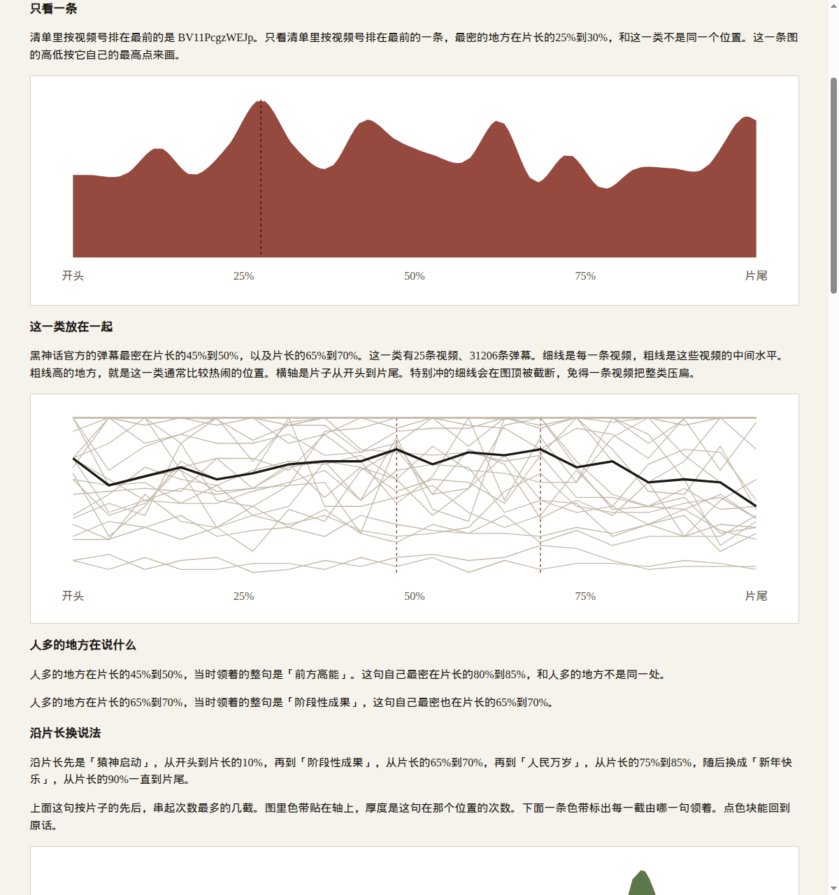
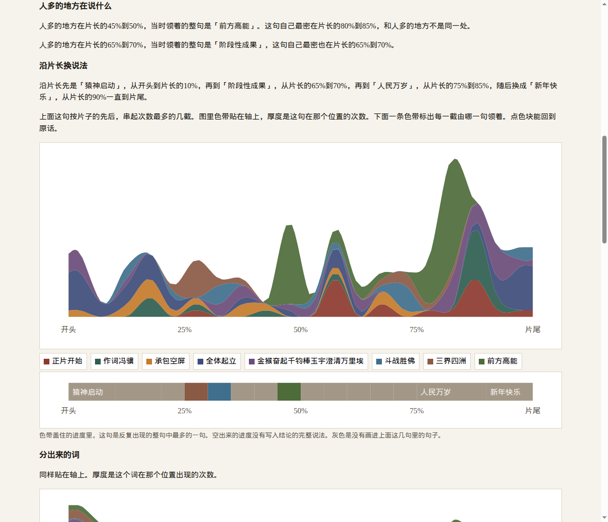
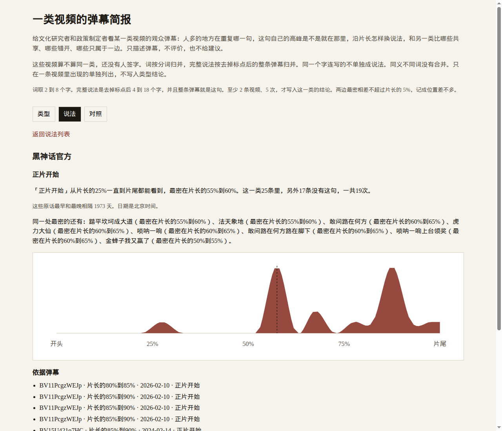
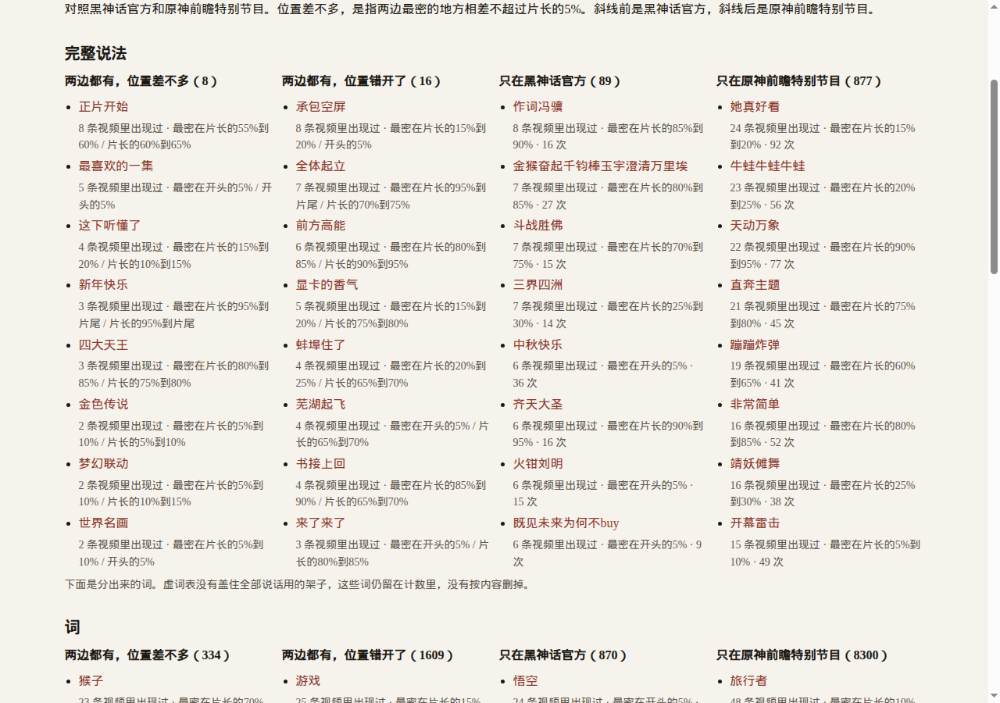

技术报告
团队名称：报名时填写
团队编号：报名时填写
作品名称：一类视频的弹幕简报
参赛方向：开源赋能的 AI 应用创新
作品形态：本地网页服务
日期：2026 年 9 月 30 日
使用者是研究某一类视频的文化研究者和政策制定者。他们要看的是这一类观众弹幕怎样分布，而不是某一条视频里哪一秒人多。一条条阅读做不到。只画单条热度，也看不出人在说什么，更不能拿去和另一类对照。
作品给出的对象是一个类型的接收结构：有哪些说法、各自盖住多少条视频、沿片长怎样起伏、这一类里面哪些视频没有这句话、和另一个类型比是共享、错开还是各自独有。每条都能点回成员弹幕。简报写出人多处在说哪一句，以及沿片长怎样换说法。
申报方向一「开源赋能的 AI 应用创新」，场景是文化传播。形态是运行在使用者自己电脑上的网页。核心功能是：读入两份由人划定的视频清单，在同一条片长百分比轴上画出数量和说法，导出结构表，并生成一段只引用表内数字的简报。
说法有两层。词来自分词，用来看这一类在提什么。完整说法是去掉标点后的整条弹幕，用来看哪一句被原样刷过。书名号、逗号不同而剩下的字相同，算同一句，点开仍能看到原来的写法。只在一条视频里出现的单独列出，不写入类型结论。简报里的每个数都能在导出表里找到，由自动测试核对。
目标用户现在能用的，多是单条视频的热度、情绪曲线或词云。这些回答不了「这一类」。需求按优先级是：先把两条时间对齐到片长百分比；再把不同写法收成可以点回原话的说法；然后标出缺席和两个类型的四栏差异；最后让简报不能写出表里没有的数。
输入是两个 zip，每个 zip 是一个候选类型。脚本读每条弹幕的播放进度、正文和发送时间，以及每一 P 的片长。位置等于前面各 P 的片长之和，加上本 P 内的进度，再除以全片片长。数量层只计数，不做归纳。说法层用分词和整句规则归并。结构表记下覆盖、进入、高峰、退出、缺席、发送时间跨度和差异栏。网页读这张表，不在浏览器里另算一套数。
这一次的分词用 jieba 0.42.1，在普通 CPU 上运行。本机对两份材料（25 条与 48 条视频，合计 198013 条弹幕）生成页面和结构表约 36 秒。后面的模型若需要 GPU 或付费接口，直接加上。开发过程使用了 Cursor 中的对话模型起草代码和文字。那个模型不是这次页面的运行时。别人只安装 Python 和 jieba，就可以重跑这一版。
人工智能在这里是中文分词：把一条弹幕切成词，使「悟空」从不同的整句里被收成同一个说法。整句层不靠模型，只去掉标点后比较整条弹幕。这样每一条说法都能列出成员弹幕，不需要再叫一次模型来解释它自己。
验证分两步。成员弹幕必须含这个词，或者去掉标点后与这句相同。简报里引号外的每个整数必须出现在结构表的某个整数字段里，引号里的原文必须是表里的说法或差异栏条目。两步都写成自动测试。
同义不同词没有合并。例如「悟空」和「大圣」仍是两个词。这一步要人看原文判断，代理打的标签不能当作核对答案。短文本主题、句向量和生成式归纳没有进入这次运行。它们可以参加同一套抽查，能点回原话就可以进入结构。
| 资源 | 版本 / 来源 | 许可证 | 用法与限制 | 状态 |
|---|---|---|---|---|
| jieba，分词库 | 0.42.1；GitHub tag v0.42.1 | MIT | 运行时分词。保留版权声明。未改其词典代码 | 已核验 |
| Python 标准库 | 本机 Python 3.12 | PSF | 读压缩包、写页面、起本地服务 | 已核验 |
| 哔哩哔哩当前公开弹幕 | api.bilibili.com 公开接口拉下的压缩包 | 不是开源数据集 | 只在运行者机器上计数。正文不进公开仓库。公开可访问不等于可以再分发 | 已限定 |
句向量模型、BTM、AutoPhrase 列在资源清单里，供以后同一套验收使用。这次没有调用。hotclip 的代码不并进。
接收结构的字段、冻结的协议、三页、结构表、简报填空和自动测试由本仓库实现。jieba 是未修改的第三方库。弹幕正文的权利不属于本团队，因此不随仓库分发。没有学校或实验室的既有成果要另作授权说明。报告不出现指导教师姓名。
作品不是把通用对话模型接到弹幕上，也不是换一张词云的皮。开源分词被用在类型这一层：同一个词或同一句要跨多条视频才进入结论，并带着进入、高峰、退出、缺席和另一类型的差异栏。这些字段都能点回原话，也能由测试复核。
准备两个压缩包。格式见 briefing/清单格式.md。每个视频有一份 meta（含分 P 片长）和一份 jsonl.gz（含 progress_ms、content、ctime、page）。不读取发言者标识。
python -m briefing 类型一.zip 类型二.zip --out demo_out
写出 demo_out/index.html 和 demo_out/report.json。加 --serve 后在本机打开。页面三栏是类型、说法、对照。
这些数在看这次结果之前写入 briefing/protocol.py，跑完没有改。
| 规则 | 取值 | 页面上怎么说 |
|---|---|---|
| 片长等分 | 20 | 写成开头、片长的百分之几、片尾 |
| 高峰容差 | 1 段，即片长的 5% | 两边最密相差不超过片长的 5%，记成位置差不多 |
| 写入类型结论 | 至少 2 条视频，且至少 5 次 | 不够的不进结论 |
| 词 | 2 到 8 个字，含汉字，去掉虚词表和同一个字连写 | 反复提到的词 |
| 完整说法 | 去掉标点后 4 到 18 个字，且整条弹幕就是这句 | 重复的完整说法 |
| 页面列出 | 每层 8 条，按盖住的视频数再按次数 | 其余仍在结构表的计数里 |
| 简报 | 人多处全部写入；沿片长次数最多的 4 截连成一句，按时间写 | 先说换了哪一句、人多处是不是这句的高峰；句里的位置和条数都在表里 |
| 依据样本 | 每条说法最多 12 条原话 | 总数以次数为准 |
虚词表是语法和话语壳，例如「这是」「应该」「已经」。它不按句子立场删弹幕。同一个字连写，例如一串「哈」，不单独成说法，但这条弹幕仍计入数量曲线。表没有盖住全部话语壳，所以「一样」「以为」这类词仍可能出现。看到结果之后没有再改这张表。
数量曲线统计每一条能定位的弹幕，不管它长不长、是不是标点。缺进度的不进入位置。说法另外计算。一条弹幕里同一个词只计一次。一条视频里同一个说法只给覆盖加一。高峰取次数严格最大的第一处。中位数保留分数，不先砍成整数。并列的数量高峰都画出来，不在句子里挑一个胜者。
点开说法时，列出同一高峰容差内的其他说法，并给出最早和最晚发送时间的相隔天数。日期按北京时间显示。证据文本是原话，词或整句只是归并键。
完整说法再沿片长看每一截进度上哪一句最多。相邻进度上是同一句的，并成一截。人多的地方写那里哪一句最多，并写这句自己最密是不是同一处。类型页把列出的完整说法画成贴在轴上的流，厚度是该句在该位置的次数。词也按同样的流来画。点开一条说法时，图是贴在轴上的面积。
两个类型用同一套段数、门槛和容差。四栏是：两边都有且高峰相差不超过容差；两边都有但高峰错开；只在前一个类型；只在后一个类型。页面先放完整说法，再放词，并写明词层里残留的话语壳没有被删掉。
代码、测试和本报告的起草使用了 Cursor 里的对话模型。团队需要核对的是：协议没有在出结果后改段数和容差；简报数字来自表；类型名单仍是候选，没有代签。运行页面不连接该模型，也不把模型输出当作人工抽查。
演示材料是两份候选清单，不是已经签字的类型：黑神话官方 25 条视频，原神前瞻特别节目 48 条视频。压缩包留在运行机器上，不进入仓库。命令见第四节。自动测试 python3 -m unittest briefing.test_briefing，10 项通过。测试覆盖四栏是否分开、标点变体是否并成一句、只在一条视频里的说法是否排除、简报整数是否来自表、人民万岁这类句子是否仍被计数，以及沿片长换句时人多处与说法高峰是否同一处。
黑神话官方共 31206 条弹幕，其中 31143 条能放上片长，63 条没有播放进度。这一类最密的地方在片长的 45% 到 50%，以及 65% 到 70%。按视频号排在最前的一条，最密在 25% 到 30%，和这一类不是同一个位置。
原神前瞻特别节目共 166807 条弹幕，其中 166697 条能放上片长。这一类最密在开头的 5%。排在最前的一条最密在 50% 到 55%，也和这一类不是同一个位置。

黑神话官方写入结论的词里，覆盖最广的是「游戏」（25 条视频都有，851 次，最密在片长的 15% 到 20%）、「悟空」（24 条，496 次，最密在开头的 5%，另外 1 条没有）、「神话」（23 条，554 次，最密在 80% 到 85%，另外 2 条没有）。原神前瞻里覆盖最广的是「可爱」（48 条，1697 次，最密在开头的 5%）、「原神」（48 条，1390 次，最密在 70% 到 75%）、「角色」（48 条，1179 次，最密在 35% 到 40%）。这些词从开头一直分布到片尾，高峰却不在同一个位置。词在类型页上同样叠成一条流。
简报先下判断，再把位置写上。黑神话官方人多的两处并不一样：片长的 45% 到 50% 领着的整句是「前方高能」，这句自己最密在 80% 到 85%，两处错开；65% 到 70% 领着的是「阶段性成果」，自己最密也在这里。沿片长连成一句：先是「猿神启动」（开头到 10%，这一截 43 次），再到「阶段性成果」（65% 到 70%，20 次），再到「人民万岁」（75% 到 85%，59 次），随后换成「新年快乐」（90% 到片尾，33 次）。
原神前瞻人多的地方在开头的 5%，领着的是「三个纠缠之缘」，这句自己最密也在这里，这一截 62 次。沿片长先是「山高狐狸野八重是我姐」（30% 到 40%，129 次），再到「原神牛逼」（70% 到 75%，97 次），再到「第五人格启动」（75% 到 80%，156 次），随后换成「海灯节快乐」（95% 到片尾，102 次）。每一截仍画在色带上。简报只把次数最多的几截连成这一句，不把每一小截都念成「最多，共几次」。

完整说法比词更接近「哪一句被刷了」。「正片开始」在黑神话 8 条视频里出现 19 次，最密在 55% 到 60%；在原神 30 条里出现 107 次，最密在 60% 到 65%。两边高峰相差一格，按写死的容差记成位置差不多。「承包空屏」两边都有，但黑神话最密在 15% 到 20%，原神最密在开头的 5%，记成错开。「前方高能」黑神话最密在 80% 到 85%（6 条，43 次），原神最密在 90% 到 95%（26 条，155 次），相差两格，也记成错开。容差没有为了让这两句看起来相同而改。
只在黑神话官方达到门槛的完整说法有 89 句，页面按覆盖列出的包括「作词冯骥」（8 条，16 次，最密在 85% 到 90%）和「金猴奋起千钧棒玉宇澄清万里埃」（7 条，27 次，最密在 80% 到 85%）。只在原神前瞻达到的有 877 句，例如「她真好看」（24 条，92 次，最密在 15% 到 20%）和「天动万象」（22 条，77 次，最密在 90% 到 95%）。
归并能点回原话。「猿神启动」这 5 条视频、80 次里面，依据样本同时有「猿神,启动！」和「猿神，启动！」。「阶段性成果」在表里是去掉书名号之后的键，依据里仍是「《阶段性成果》」，2 条视频、55 次，最密在 65% 到 70%，发送时间跨度 1058 天。「悟空」和「大圣」没有并成一个词：前者 24 条视频、496 次，后者 20 条视频、330 次。

只在一条视频里、因此不写入结论的，黑神话有 354 个词、104 句完整说法，原神有 472 个词、329 句。它们出现在说法页的末栏和结构表的单独计数里。
词这一层通过门槛的条目很多，因为门槛是写死的 2 条视频、5 次，原神有 48 条视频。四栏计数是：两边高峰接近的词 334 个，错开的 1609 个，只在黑神话的 870 个，只在原神的 8300 个。页面每种只列覆盖最广的 8 个，例子分别是「猴子」「游戏」「悟空」「旅行者」。完整说法的四栏是 8、16、89、877，例子是「正片开始」「承包空屏」「作词冯骥」「她真好看」。

这次运行把简报里引号外的整数逐个对回 report.json 的 table，没有对不上的数；引号中的说法都能在说法行或差异行里找到。结构表共 14217 行，其中包含全部入选说法，不只有页面上的 8 条。人民万岁在黑神话的表里仍是一条完整说法：2 条视频、69 次，最密在 75% 到 80%，发送时间跨度 27 天，差异栏为只在这一类。研究计数没有因为它的内容把它拿掉。若正式提交文本不摘录某一句，那是报告的取舍，不回头改这张表。
两份材料没有人签字确认「这就是同一个类型」。同义不同词没有人看原文抽查。3 到 5 分钟的界面录像还没有。因此本报告不把整卷写成满分。
目录里有 588 条相关记录，多数只读到题名和摘要注。下面只写已经打开过、并且真的落进这件作品的几项，不把目录规模写成阅读量。
百分比轴、单条可视化和情绪曲线都已经有人做过。创新不依赖宣称这些是空白，而依赖评委能在说法流、缺席和四栏上核对的那一层。
已在仓库中的是服务代码 briefing/、类型清单格式、自动测试、requirements.txt 和本报告。换两份同样格式的压缩包，同一条命令得到同格式的表和页面。弹幕原文不进仓库。仓库自身的许可证尚未单列，以免和以后可能加入的依赖冲突；当前运行时依赖 jieba 的 MIT 许可已写入《资源清单》。
维护上，段数、容差和入选门槛继续以协议文件为准。人签字的类型清单和人看原文的同义抽查完成之前，页面上的「还没有人签字」「同义不同词没有合并」保持不动。
弹幕来自网站当前公开接口，不是一份允许任意再分发的开源数据集。本仓库保存爬取脚本和清单格式，不保存正文。报告里出现的原句是结构表中的说法和少量依据样本，用来让结果可核对，不是把语料再发布一遍。
材料里没有发言者字段，页面就不显示是谁发的。虚词表和「同一个字连写」只决定什么可以成为一个说法，不把弹幕从数量里删掉。内容只要达到门槛就留在表里。人民万岁即是一例。
分词会把有的套话切开，整句层用来补这一刀。话语壳没有被虚词表收完，词层的四栏计数因此偏大，页面用覆盖最广的 8 条和一句说明来提示。类型边界未签字时，不能把结果说成某一文化类型的定论。工具不宜用于识别个人、评价群体倾向或直接起草政策。
开发辅助模型的输出经过测试和这次对表核对。它不是运行时组件，也不替代人工抽查。
作品已经能对两份候选材料重跑出类型接收结构：数量的粗线和细线、贴在片长上的说法流、人多处在说哪一句、沿片长哪一句领着哪一截、覆盖与缺席、依据、同一高峰附近的其他说法、四栏差异，以及与结构表一致的简报。这一版的计数和分词没有用到 GPU。
尚未完成的是：两份由人签字的类型清单，人看原文判断同义不同词是否该合并，以及 3 到 5 分钟只拍界面的演示录像。这三件不做完，整卷不按满分计算。后续若做短文本主题或句向量，必须用同一套「能点回原话」的验收，不能另换一套不能复核的标签。
依赖：pip install -r requirements.txt（jieba==0.42.1）。然后执行第四节的命令。测试不需要真实弹幕压缩包。
下列出处与仓库目录中的记录一致。除正文注明「打开过」的页面外，不把目录中的其余题名当成已读全文。
jieba 许可：Sun Junyi，MIT License，tag v0.42.1。